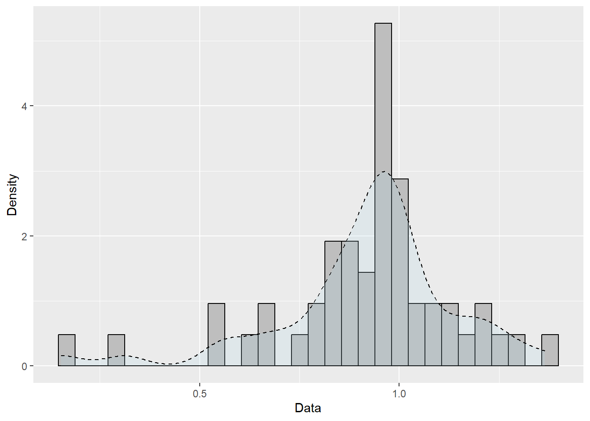
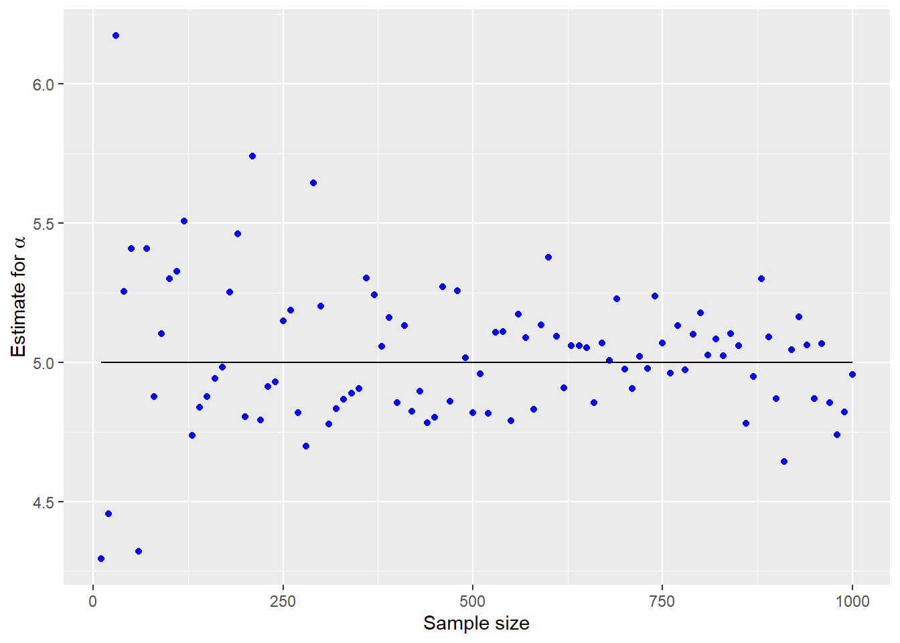

Code
library(tidyverse)
dados = read_table("Dados_Weibull.txt", col_names = FALSE)
ggplot(dados, aes(X1)) +
geom_histogram(aes(y=after_stat(density)), bins = 30, color="black", fill="grey")+
geom_density(alpha=.2, linetype = 2, fill="light blue") +
labs(x="Data", y = "Density")
Code
newton.raphson.w = function(x.dados, alpha.0=10, precisao = 1e-7, n=100){
dlogLikW = function(y){(length(x.dados)/y) + sum(log(x.dados)) - sum(log(x.dados)*(x.dados^y))}
ddlogLikW = function(z){-(length(x.dados)/z^2) - sum((log(x.dados)^2)*(x.dados^z))}
for (i in 1:n) {
alpha.1 = alpha.0 - dlogLikW(alpha.0)/ddlogLikW(alpha.0)
if(abs(alpha.1 - alpha.0) < precisao){
res = list(alpha.1,i)
names(res) = c("alpha.estimado","n.iter")
return(res)
}
alpha.0 = alpha.1
}
print("with the number of iterations there was no convergence")
}
newton.raphson.w(dados %>% .$X1)$alpha.estimado
[1] 4.965997
$n.iter
[1] 5Code
#simulation
n = seq(10,1000,10)
estimativas = array(NA, dim=c(length(n),1))
for (i in 1:length(n)){
dat = rweibull(n[i], shape=5, scale=1)
estimativas[i,] = newton.raphson.w(dat,2)$alpha.estimado
}
dados <- tibble(
estim = estimativas,
sim = n)
ggplot(dados, aes(x = n,
y = estim,
group=1)) +
geom_point(color="blue") +
geom_line(y=5) +
labs(x="Sample size", y=expression("Estimate for"~alpha), colour = "Sample size")